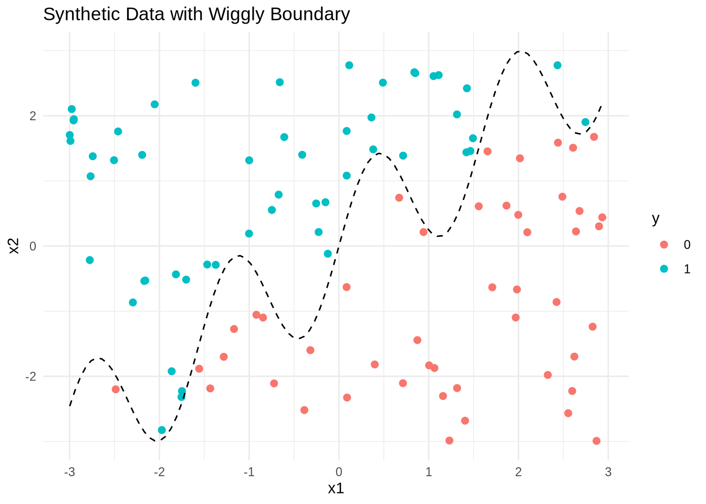
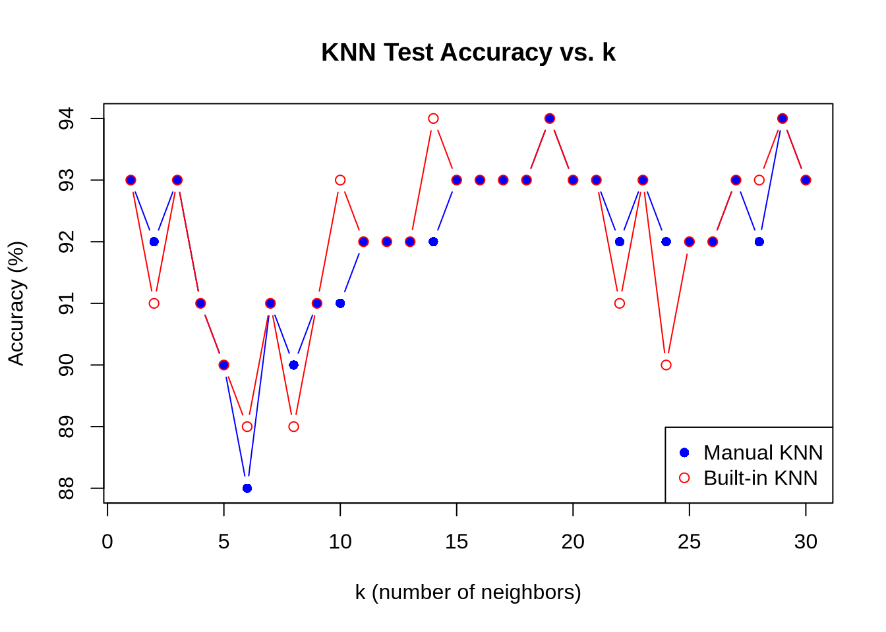

yogurt <- read.csv("~/Desktop/MSBA/SP/MGTA495b/hw4/yogurt_data.csv")
keydrivers <- read.csv("~/Desktop/MSBA/SP/MGTA495b/hw4/data_for_drivers_analysis.csv")
penguins <- read.csv("~/Desktop/MSBA/SP/MGTA495b/hw4/palmer_penguins.csv")Latent-Class MNL Analysis
Data Description
Yogurt Dataset (yogurt_data.csv) id: Unique identifier for each observation (e.g., household or customer). y1, y2, y3, y4: Purchase counts or indicators for four different yogurt brands or types. f1, f2, f3, f4: Feature indicators (e.g., whether each brand was on promotion or display) for the four brands. p1, p2, p3, p4: Prices for the four yogurt brands. This dataset is structured for analyzing consumer choice among multiple yogurt brands, including the effects of price and promotional features.
Keydrivers Dataset (data_for_drivers_analysis.csv) brand: Name or code of the brand being evaluated. id: Unique identifier for each respondent or observation. satisfaction: Overall satisfaction score. trust: Trust in the brand. build: Perception of the brand’s ability to build value or relationships. differs: Perception of how the brand differs from competitors. easy: Ease of use or interaction with the brand. appealing: How appealing the brand is to the respondent. rewarding: Perceived reward or benefit from the brand. popular: Perceived popularity of the brand. service: Quality of service associated with the brand. impact: Perceived impact or influence of the brand.
penguins (palmer_penguins.csv) This dataset contains biological and physical measurements for penguins from the Palmer Archipelago, Antarctica. Standard columns include:
species: Penguin species (Adelie, Chinstrap, Gentoo). island: Island where the penguin was observed. bill_length_mm: Length of the bill (mm). bill_depth_mm: Depth of the bill (mm). flipper_length_mm: Length of the flipper (mm). body_mass_g: Body mass (grams). sex: Sex of the penguin. year: Year of observation.
Latent-Class MNL
I first used the Yogurt dataset to estimate a latent-class MNL model. The data provides anonymized consumer identifiers (id), a vector indicating the chosen product (y1:y4), a vector indicating if any products were “featured” in the store as a form of advertising (f1:f4), and the products’ prices in price-per-ounce (p1:p4). For example, consumer 1 purchased yogurt 4 at a price of 0.079/oz and none of the yogurts were featured/advertised at the time of consumer 1’s purchase. Consumers 2 through 7 each bought yogurt 2, etc. I reshaped the data from its current “wide” format into a “long” format for later model fitting.
# Step 1: Long format for choice
yogurt_long <- yogurt %>%
pivot_longer(
cols = starts_with("y"),
names_to = "alt",
names_pattern = "y(\\d+)",
values_to = "choice"
) %>%
mutate(
alt = as.integer(alt)
)
# Step 2: Get price and featured for each alt (using pivot_longer & join)
price_long <- yogurt %>%
pivot_longer(
cols = starts_with("p"),
names_to = "alt",
names_pattern = "p(\\d+)",
values_to = "price"
) %>%
mutate(
alt = as.integer(alt)
) %>%
dplyr::select(id, alt, price)
featured_long <- yogurt %>%
pivot_longer(
cols = starts_with("f"),
names_to = "alt",
names_pattern = "f(\\d+)",
values_to = "featured"
) %>%
mutate(
alt = as.integer(alt)
) %>%
dplyr::select(id, alt, featured)
# Step 3: Join them all by id and alt
yogurt_long <- yogurt_long %>%
left_join(price_long, by = c("id", "alt")) %>%
left_join(featured_long, by = c("id", "alt"))
# successes = choice, failures = 1-choice
yogurt_long$success <- yogurt_long$choice
yogurt_long$failure <- 1 - yogurt_long$choiceThen, I fitted the latent-class MNL on these data separately for 2, 3, 4, and 5 latent classes and the standard MNL model on these data. ::: {.cell}
results <- list()
for (k in 2:5) {
fm <- flexmix(cbind(success, failure) ~ price + featured | id,
data = yogurt_long,
k = k,
model = FLXMRglm(family = "binomial"))
results[[paste0("k", k)]] <- fm
cat("\n-----\nk =", k, ", BIC =", BIC(fm), "\n")
}
-----
k = 2 , BIC = 10758.61
-----
k = 3 , BIC = 10795.36
-----
k = 4 , BIC = 10832.1
-----
k = 5 , BIC = 10868.81 best_model <- results[["k2"]] # or whichever k has the lowest BIC
parameters(best_model) Comp.1 Comp.2
coef.(Intercept) -1.650241 -3.213638
coef.price 7.484206 22.879940
coef.featured -10.414751 8.903866summary(best_model)
Call:
flexmix(formula = cbind(success, failure) ~ price + featured |
id, data = yogurt_long, k = k, model = FLXMRglm(family = "binomial"))
prior size post>0 ratio
Comp.1 0.584 7800 9016 0.865
Comp.2 0.416 1920 9700 0.198
'log Lik.' -5347.171 (df=7)
AIC: 10708.34 BIC: 10758.61 :::
# Prepare data for mlogit
mlogit_data <- mlogit.data(
yogurt_long,
choice = "success", # or whatever your choice column is (should be 0/1 or TRUE/FALSE)
shape = "long",
id.var = "id",
alt.var = "alt"
)
# Fit standard MNL (conditional logit)
mnl_model <- mlogit(success ~ price + featured | 0, data = mlogit_data)
summary(mnl_model)
Call:
mlogit(formula = success ~ price + featured | 0, data = mlogit_data,
method = "nr")
Frequencies of alternatives:choice
1 2 3 4
0.341975 0.401235 0.029218 0.227572
nr method
4 iterations, 0h:0m:0s
g'(-H)^-1g = 8.82E-05
successive function values within tolerance limits
Coefficients :
Estimate Std. Error z-value Pr(>|z|)
price 9.49728 0.94916 10.006 < 2.2e-16 ***
featured 0.89669 0.10130 8.852 < 2.2e-16 ***
---
Signif. codes: 0 '***' 0.001 '**' 0.01 '*' 0.05 '.' 0.1 ' ' 1
Log-Likelihood: -3287.7Based on the Bayesian Information Criterion (BIC), which balances model fit against complexity and rewards a lower value for better models, the latent-class MNL with 2 classes is preferred; it has the lowest BIC among the models considered. This suggests that the data are best represented by two distinct consumer segments rather than by a single, homogeneous group.
Comparing the standard multinomial logit (MNL) model and the latent-class MNL with the optimal number of classes, we see clear differences in the insights each provides. The standard MNL model estimates positive and significant effects for both price and featured status, implying that, on average, consumers are more likely to choose yogurts that are higher-priced and advertised. This could reflect a perception that higher price signals higher quality or could be due to specific characteristics or coding in the dataset.
In contrast, the latent-class MNL model reveals important heterogeneity that the aggregate approach masks. One segment, making up about 42% of consumers, demonstrates a strong preference for yogurts that are both more expensive and featured—likely representing consumers attracted to premium, advertised options. The other, larger segment (about 58%), also tends to prefer higher-priced yogurts but is actually less likely to select those that are advertised, indicating either skepticism toward promotions or a preference for less-promoted products.
In summary, while the standard MNL assumes uniform preferences across all consumers, the latent-class approach uncovers meaningful differences in how people respond to price and advertising. This segmentation highlights the importance of tailoring marketing strategies to distinct groups rather than treating the market as homogeneous.
K Nearest Neighbors
Next, I used the following code to generate a synthetic dataset for the k-nearest neighbors algorithm. The code generates a dataset with two features, x1 and x2, and a binary outcome variable y that is determined by whether x2 is above or below a wiggly boundary defined by a sin function.
# gen data -----
set.seed(42)
n <- 100
x1 <- runif(n, -3, 3)
x2 <- runif(n, -3, 3)
x <- cbind(x1, x2)
# define a wiggly boundary
boundary <- sin(4*x1) + x1
y <- ifelse(x2 > boundary, 1, 0) |> as.factor()
dat <- data.frame(x1 = x1, x2 = x2, y = y)The following is a plot of the data where the horizontal axis is x1, the vertical axis is x2, and the points are colored by the value of y. ::: {.cell}
ggplot(dat, aes(x = x1, y = x2, color = y)) +
geom_point(size = 2) +
stat_function(fun = function(x) sin(4 * x) + x, color = "black", linetype = "dashed") +
labs(title = "Synthetic Data with Wiggly Boundary") +
theme_minimal()
:::
I then generated a test dataset with 100 points, using the same code as above but with a different seed. ::: {.cell}
set.seed(7)
x1_test <- runif(n, -3, 3)
x2_test <- runif(n, -3, 3)
boundary_test <- sin(4 * x1_test) + x1_test
y_test <- ifelse(x2_test > boundary_test, 1, 0)
dat_test <- data.frame(x1 = x1_test, x2 = x2_test, y = as.factor(y_test)):::
Moving on, I implemented KNN by hand and checked it with the built-in function – eg, class::knn() in R. ::: {.cell}
euclidean_dist <- function(x, y) sqrt(sum((x - y)^2))
knn_predict <- function(train, test, k) {
pred <- numeric(nrow(test))
for (i in 1:nrow(test)) {
dists <- apply(train[, c("x1", "x2")], 1, euclidean_dist, y = as.numeric(test[i, c("x1", "x2")]))
neighbors <- order(dists)[1:k]
pred[i] <- names(sort(table(train$y[neighbors]), decreasing = TRUE))[1]
}
as.factor(pred)
}
# Use class::knn
knn_builtin <- function(k) {
class::knn(
train = dat[, c("x1", "x2")],
test = dat_test[, c("x1", "x2")],
cl = dat$y,
k = k
)
}:::
Finally, I ran my function for k=1,…,k=30, each time noting the percentage of correctly-classified points from the test dataset and plotted the results, where the horizontal axis is 1-30 and the vertical axis is the percentage of correctly-classified points. ::: {.cell}
accuracy_manual <- numeric(30)
accuracy_builtin <- numeric(30)
for (k in 1:30) {
pred_manual <- knn_predict(dat, dat_test, k)
pred_builtin <- knn_builtin(k)
accuracy_manual[k] <- mean(pred_manual == dat_test$y)
accuracy_builtin[k] <- mean(pred_builtin == dat_test$y)
}
plot(1:30, accuracy_manual * 100, type = "b", pch = 16, col = "blue",
xlab = "k (number of neighbors)", ylab = "Accuracy (%)",
main = "KNN Test Accuracy vs. k")
lines(1:30, accuracy_builtin * 100, type = "b", pch = 1, col = "red")
legend("bottomright", legend = c("Manual KNN", "Built-in KNN"), col = c("blue", "red"), pch = c(16, 1))
optimal_k <- which.max(accuracy_builtin)
cat(sprintf("Optimal k (highest accuracy): %d (%.1f%%)\n", optimal_k, accuracy_builtin[optimal_k] * 100))Optimal k (highest accuracy): 14 (94.0%)::: Based on my results and the accuracy plot, the optimal value of k is 14, where the KNN classifier achieves the highest test accuracy of approximately 94%. This suggests that using 14 nearest neighbors provides the best balance between overfitting and underfitting on your test set for this synthetic dataset. The plot shows that the classification accuracy varies with k, and k = 14 yields the peak performance among all tested values.